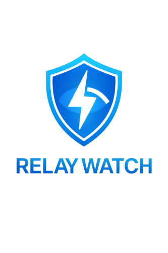
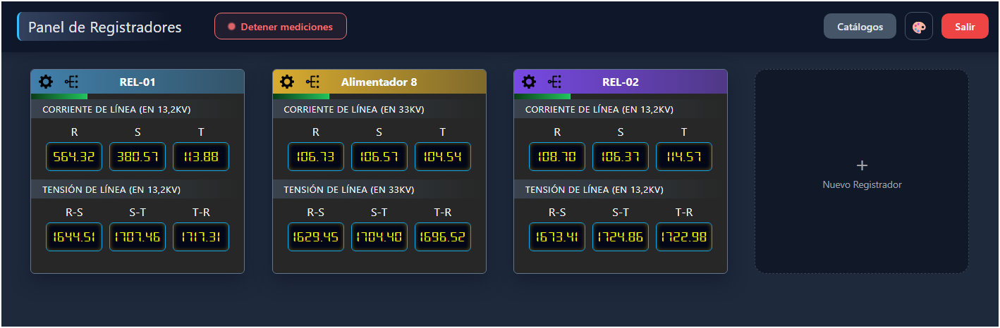
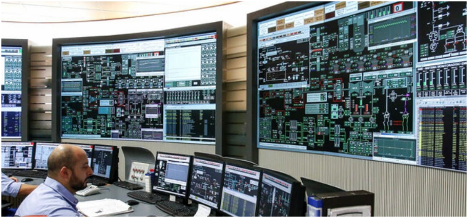
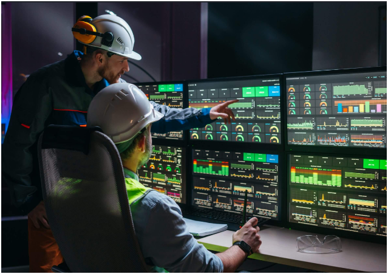
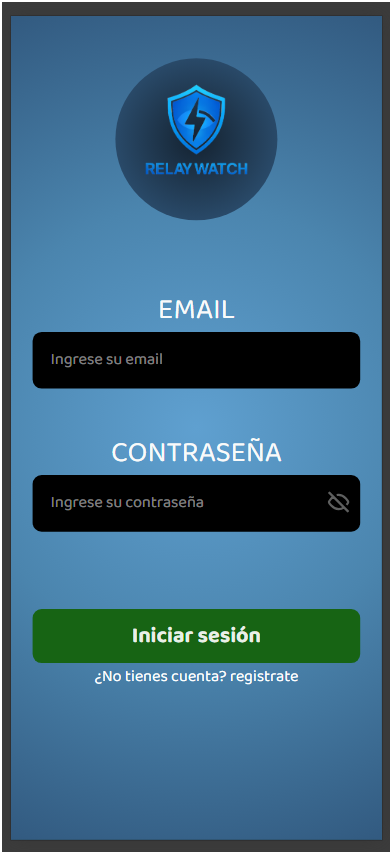
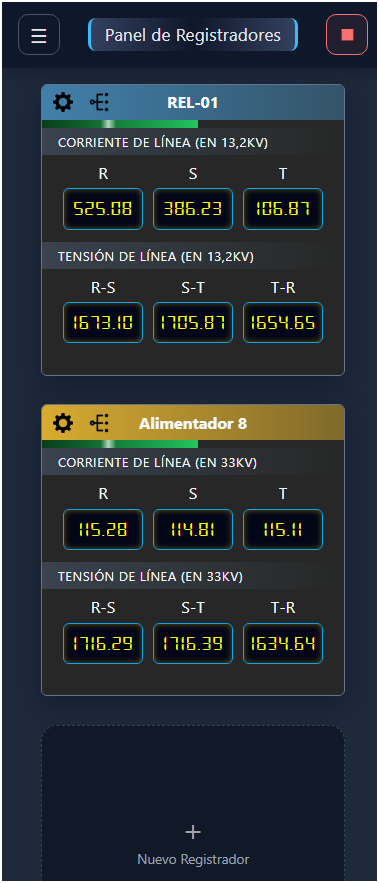
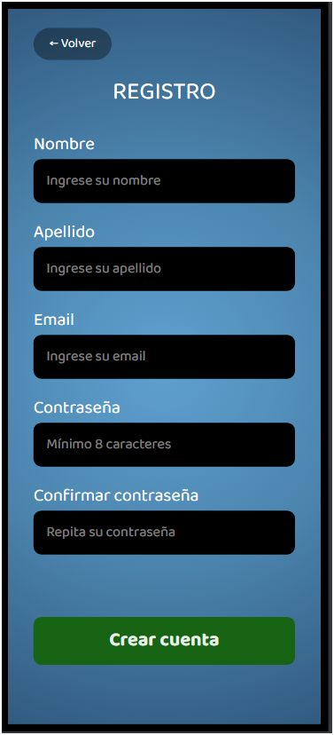

Mediciones en vivo
Las tensiones y corrientes de cada equipo se actualizan automáticamente, con una barra de progreso que marca cada muestreo.

Monitoreo de registradores eléctricos
Visualizá las mediciones de tus relés de protección y analizadores de red —tensiones, corrientes y más— en un panel claro y actualizado al instante.
Conocé el sistema ↓Cada registrador con sus mediciones organizadas por panel, actualizándose en vivo.

Pensada para distribuidoras de energía, reutilizando la infraestructura de medición que ya tienen.

Cada equipo de la red mide sin descanso. Nunca faltó información: lo que faltaba era poder verla sin pelear con un sistema SCADA pensado para especialistas.

RelayWatch toma esos mismos datos y los convierte en una pantalla que se entiende sola. La prepara un técnico una vez; de ahí en más, seguir el estado de la red es tan simple como echar un vistazo.
Todo lo que necesitás para tener tus equipos eléctricos bajo control.
Las tensiones y corrientes de cada equipo se actualizan automáticamente, con una barra de progreso que marca cada muestreo.
Dá de alta relés y analizadores, configurá su período de muestreo y mapeá qué magnitud mide cada uno y en qué panel se muestra.
Aplica las relaciones de transformación de tensión y corriente para mostrar los valores reales de la red, no los del secundario.
Administradores que configuran el sistema e invitados que solo visualizan, con autenticación mediante tokens.
Del equipo en la subestación hasta tu pantalla, en tres pasos.
Un relé de protección, un analizador de red o cualquier equipo con protocolo Modbus registra las magnitudes de la instalación eléctrica.
El sistema consulta los registros del equipo por Modbus TCP cada cierto tiempo, les aplica las relaciones de transformación y guarda las lecturas.
El panel muestra cada equipo con sus mediciones organizadas, actualizándose en vivo.
El panel se adapta a tu pantalla: monitoreá tus equipos desde la compu o el celular.



El histórico de mediciones, para decidir con datos y no de memoria.
La evolución de cada alimentador a lo largo del tiempo, en gráficos claros.
Picos y valles históricos por alimentador, para ver exigencias y márgenes.
Elegí el período que te interese y compará distintos momentos de la red.
Avisos automáticos por mail, SMS o push cuando algo se sale de lo normal: salidas de servicio, mediciones fuera de rango o preavisos de falla, según los umbrales que definas.
Información para planificar maniobras e inversiones con anticipación.